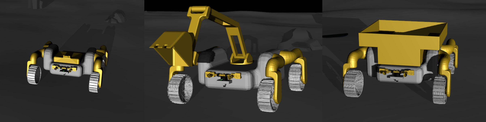
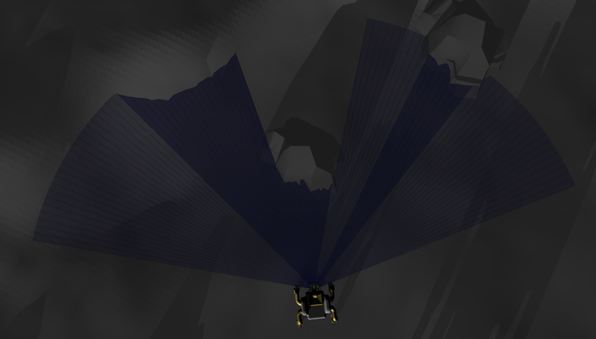
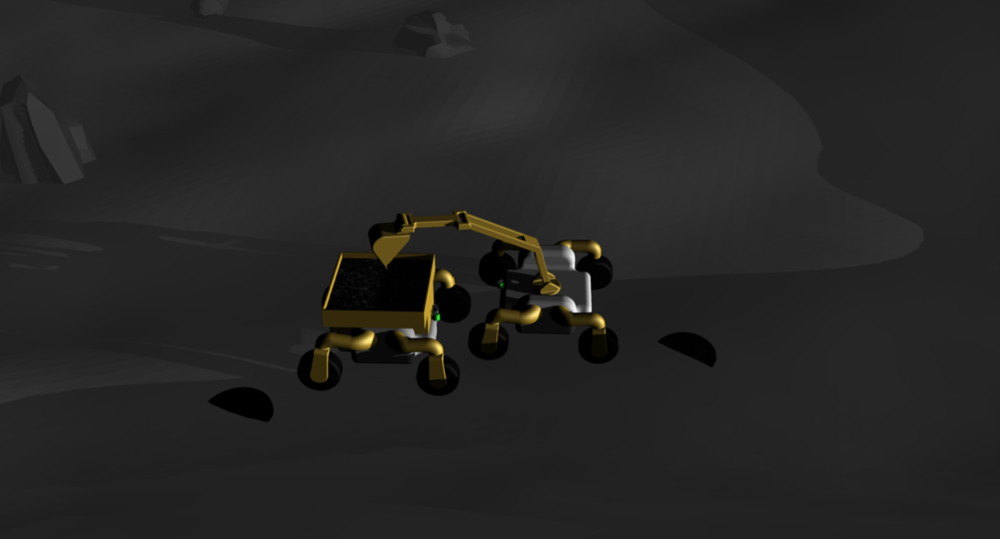

Phase 2 of the NASA Space Robotics Challenge (SRC) deals with in-situ resource utilization (ISRU).
ISRU is the practice of collecting and using materials found locally on astronomical objects.
ISRU has numerous benefits over bringing material from Earth including but not limited to reduced cost and time and increased efficiency.
The goal of the challenge is to advance the capabilities of autonomous lunar surface robots to aid in ISRU.
Mission member on the Columbia Space Initiative (CSI) team
Future ISRU missions may occur on surfaces such as Earth's moon, and will likely need to operate autonomously for long periods of time before, during, and after the presence of astronauts. Robots that can successfully perform ISRU tasks with little to no human intervention are valuable due to both the communication latencies and limited bandwidth between these destinations and Earth.
The SRC challenge was conducted entirely in a simulated environment using the Robot Operating System (ROS) and Gazebo simulator.
The simulation environment mimics a lunar environment and contains a variety of rocks, hills, craters.
Additionally, the simulation contains task specific objects such as resources, a home base, and a CubeSat.
The challenge is comprised of three tasks: Resource localization, resource collection, and self-localization.
Three rovers, each created for a specific function, are provided. The scout is designed to explore the lunar terrain, the excavator is designed to dig resources below the lunar surface, and the hauler is designed to transport resources to the home base.

Left to right: scout, excavator, hauler
I primarily worked on three areas of the challenge.
The sensors on the rovers (camera, lidar, IMU) produced noisy readings that had to be rectified.

Noisy lidar data
A robust obstacle avoidance system had to be created due to the difficult lunar terrain.
Scout using the Bug1 obstacle avoidance algorithm
Rovers need subroutines to accurately exavate and store resources.

Excavator and Hauler extracting a resource